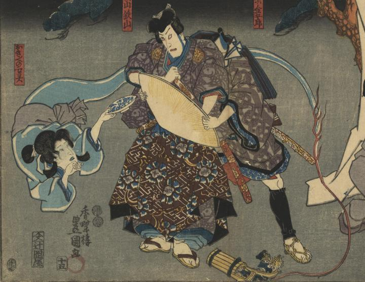

菊を差した手桶から、お菊の亡霊が皿を持って現われている。
著作者：香蝶楼豊國／出典：親書誌：U426_nichibunken_0346：実成金菊月；ミノリヨシ コガネ ノ キクズキ／日付：2014／資源識別子：U426_nichibunken_0346_0001_0000
Copyright (c)2010- International Research Center for Japanese Studies, Kyoto, Japan. All rights reserved.